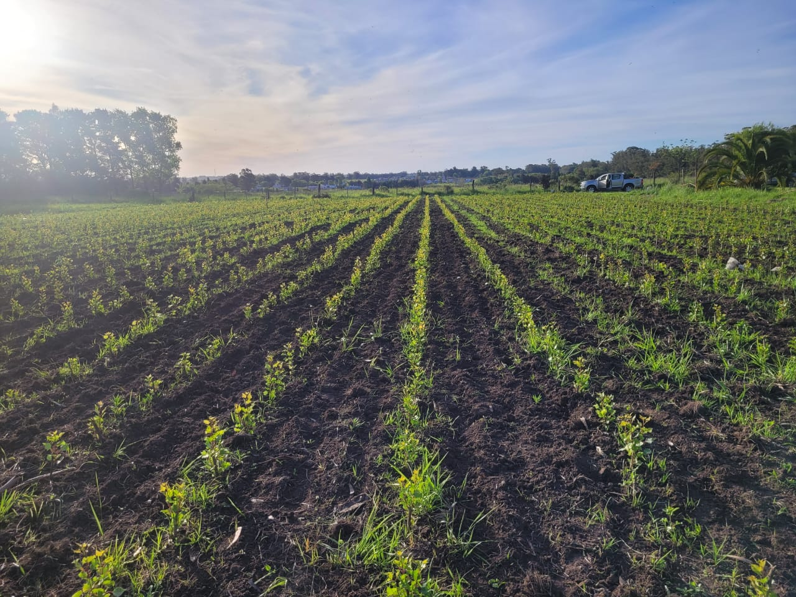

Monte comercial
Plantaciones para producción de madera, leña y otros productos forestales.

Planificación de proyectos, asesoramiento integral y diseño paisajístico adaptados a tu campo, parque o arbolado urbano.
Plantaciones para producción de madera, leña y otros productos forestales.
Barreras vegetales para proteger ganado y cultivos.
Barrera de árboles con la finalidad de proteger cultivos, animales y/o edificaciones.
Elección de especies según estudio de suelo y condiciones edafoclimáticas. Seguimiento del proyecto y post-venta para asegurar resultados.
Diseño y ejecución de áreas verdes basados en la estética elegida por el cliente asesoramiento en elección de especies.
Produtores de salicacias con clones identificados y certificados.
Vivero productor de plantas de sombra y forestales varias.
Variedad de especies arbustibas y de ornamento adaptadas a cada condicon de suelo y clima.
Contamos con clones de especies identificadas y certificadas para arbolado urbano, parques y campos, seleccionados según condiciones edafoclimáticas.

Gestionamos recursos naturales con responsabilidad para preservar los ecosistemas y fomentar la regeneración ambiental.
Nos esforzamos para ofrecer calidad y ética en cada proyecto, generando impacto positivo y duradero.
Trabajamos con comunidades y organizaciones para crear proyectos que reflejen necesidades y aspiraciones reales.
Con años de trayectoria, gestionamos proyectos de desarrollo forestal y paisajismo con profundo conocimiento y responsabilidad.